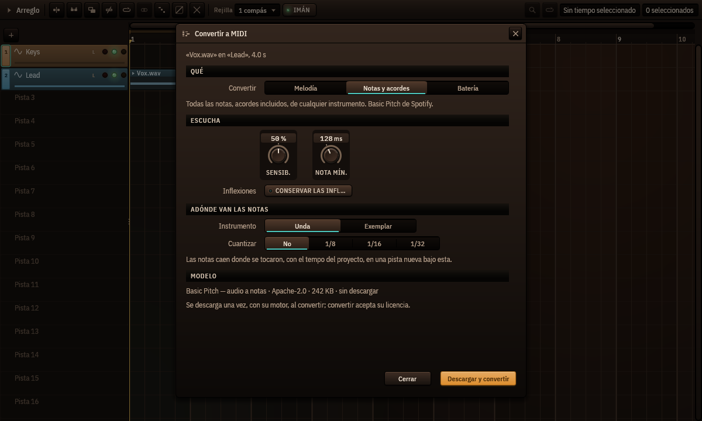

Convertir audio a MIDI
Cantus 0.1.0-beta.9 y posteriores · Read in English
Cantus convierte un clip de audio en notas que puedes editar, tocar con cualquier instrumento, cuantizar o imprimir: una melodía cantada o tarareada, una parte de piano con sus acordes, un loop de batería.

Convertir un clip
- Clic derecho en un clip de audio del arreglo ▸ Convertir a MIDI…
- Elige qué convertir: - Melodía — una nota a la vez: una voz, un solo, una línea de bajo. El detector de tono propio de Cantus (el del editor de tono): nada que descargar. - Notas y acordes — todas las notas, acordes incluidos, de cualquier instrumento. El modelo Basic Pitch de Spotify. - Batería — bombo, caja, toms, charles y platos, escritos en el mapa de batería General MIDI para Pulsus.
- Ajusta cómo escucha: - Sensibilidad (notas y acordes, batería) — más alta encuentra notas más débiles (y más equivocadas); 50 % es lo que cada modelo usa por defecto. Melodía no la tiene: su seguidor decide por sí mismo qué se canta. - Nota más corta — las más cortas se descartan (128 ms por defecto). - Conservar las inflexiones — cada nota guarda sus inflexiones y su vibrato como su propia curva de inflexión (la expresión por nota del piano roll), incluso notas que se solapan. - En batería, Escribir elige las clases. Bombo, caja y charles están encendidos; toms y platos solo cuando el modelo de batería está instalado, porque sin él fallan a menudo.
- Elige adónde van las notas: Unda, o Exemplar con su primer sonido de fábrica (el kit de estudio de Pulsus para batería), y Cuantizar — apagado por defecto, para que las notas queden donde se tocaron.
- Convertir. Las notas llegan a una pista nueva bajo la del clip, en un clip MIDI que empieza y acaba con el clip de audio. Es un solo paso de Deshacer.
Las notas siguen al clip tal como suena: con el tempo del proyecto y sus cambios, las marcas de un clip con warp, un clip invertido al revés y un clip en bucle en cada vuelta — cada vuelta donde de verdad suena, también tras un cambio de tempo, la última cortada donde acaba el clip.
Los modelos
Notas y acordes necesita Basic Pitch (230 KB, Apache-2.0, de Spotify) y el motor ONNX Runtime (unos 15 MB, MIT, de Microsoft), descargados una vez la primera vez que conviertes — el diálogo muestra el modelo, su licencia y su tamaño antes de descargarlo, y convertir acepta su licencia. Melodía y Batería funcionan sin descargar nada.
Para mejor batería, Descargar el modelo de batería en el diálogo: Onsets and Frames Drums de Magenta (6 MB, Apache-2.0), entrenado con 444 horas de batería real. Escribe todas las clases; el detector propio de Cantus sigue diciendo qué charles iban abiertos.
Todo se ejecuta en tu ordenador, en un proceso auxiliar: si un modelo falla, Cantus sigue.
Qué tan bien funciona
Medido con la regla habitual (una nota cuenta si empieza a menos de 50 ms de la real y en el tono correcto):
- Melodía: unas 8 de cada 10 notas en melodías tocadas por los instrumentos de Cantus y en grabaciones solistas de violín, trompa, clarinete, trompeta, violonchelo y saxofón.
- Notas y acordes: unas 7 de cada 10 en grabaciones de música de cámara, 6 de cada 10 en los acordes de nuestros instrumentos; exactamente las notas que escribe el propio Basic Pitch de Spotify.
- Batería en grabaciones de batería: bombo 96 %, caja 85–89 %, charles 65 %; con el modelo de batería, charles 74 %, platos 64 % y toms 44 % (los toms son lo más difícil: revísalos).
La batería funciona mejor en una pista de batería o una batería separada. En una mezcla entera, enciende Separar antes la batería: Cantus saca la batería con HT-Demucs (instalado con Separar pistas…) antes de escuchar, lo que deja una mezcla casi tan bien como una pista de batería (alrededor de un minuto para una canción de 3 minutos). El órgano de ruedas fónicas (Organum) no se transcribe bien.
Para agentes
Los agentes conectados por el servidor MCP de Cantus tienen la misma conversión con la herramienta audio_to_midi: pide permiso como cualquier edición, nombra el clip y la pista que convierte y nunca descarga un modelo.